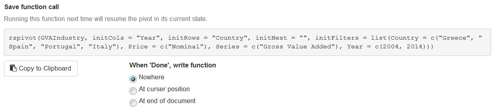

Introduction to rspivot
Ryan Timpe
2017-11-25
rspivot is a Shiny gadget for RStudio for viewing data frames.
The View() function in RStudio displays data frames and tibbles as they are stored in the R environment: flat files of many rows and columns. Though View() provides the ability to filter series using a single parameter or value range, it lacks many tools necessary for properly examing output. rspivot provides an alternative to View() by viewing data frames and tibbles as interactive pivot tables.
The rspivot Window
Running rspivot() will cause Shiny gadget window to open in RStudio. By default, the gadget will use the last created object in the enviroment using the .Last.value object in R. This object must be a data frame or a tibble.
Alternatively, you can pass any data frame to the function. The easiest option is to use a data frame with a single column of values, labeled value. Passing GVAIndustry, a data frame of macroeconomic series from Eurostat included in the package, results in the window below.
rspivot(GVAIndustry)
Table
By default, the table of values displays the sum of all data values in the table, split by the series shown in the rows and columns. The rows and columns are sorted to match the same order of the elements in the data frame. To sort in ascending or descending order, click the column names in the table.
Rows, Nested Rows, and Columns
The top three menus list each of the series in the data frame to use as the rows and columns in the pivot table. Additionally, you can choose to nest row values to show the combination of two series.
For each series displayed in the table, the checkbox below the select menus toggles the marginal totals. The row and nested row totals are added as the last element in the series. The column total is appended as a column on the righthand side of the table.
An additional option for columns is to show sparkline or bar charts, displaying the values of every column in each row.
Filters
For each series in the data frame, excluding the values, there will be a filter on the lefthand side of the rspivot window. For most series, these will be a dropdown box, allowing the user to choose one or many options.
These select menus filter the data frame to only include the rows of data that contain those elements.
Each menu defaults to only one item, “Show All”. This item provides a shortcut to include all elements in a series, without overcrowding the menu windows. Including this option in a filter selection, even with other specific elements, will always include all elements and therefore will not filter the data frame over that series.
If a series is strictly numeric (e.g. Year), then the filter menu will be a slider input, specifying the minimum and maximum values to filter.
The data frame will not be filtered until pressing the blue “Refresh Data” button on the top right. This will ensure the gadget runs smoothly for large data frames.
Resuming table state
The default state of an rspivot window to include all elements in each series, using the right-most series in the data frame as the columns and the second right-most series as the rows. These defaults can be changed in the function call.
The easiest way to change the defaults is to initially run the rspivot() function without changing any inputs. Use the menus to select the desired filters, rows, and columns. Below the table, rspivot prints out the function call that can be used in the future to resume the state of the table, even if the data changes.

This area includes the option to copy the function call onto the clipboard, which can be pasted in the console or R script. Alternatively, you can select the option to automatically print the final function call into your console or script (wherever the curser is active) after clicking the “Done” button.
rspivot(GVAIndustry, initCols = "Year", initRows = "Country", initNest = "",
initFilters = list(Country = c("Greece", "Spain", "Portugal", "Italy"),
Price = c("Nominal"),
Series = c("Gross Value Added"), Year = c(2004, 2014)))Additional Features
Graphical view
The plot tab provides the option to view the table as a chart. This can be displayed as a line chart, grouped bars, or stacked bars.
Columns in the pivot table are used as the x-axis, while the selected rows are each represented as a data group. If the pivot table has nested rows, each of those nests is separated into facets.
This feature is in development.
Data options
The data table options tab provides options for summarizing and modifying the values shown in the pivot table. From left to right, the options listed follow the same flow as the calculations to display the data table.
Pivot table values
Pivot table values determine what is shown in the data tables. This tells the pivot tables how to combine every value in the data frame that belong to a particular row and column.
The functions are passed to dplyr::summarize().
The pivot table value function can be set on the initial function call using the initPivotValues input.
rspivot(GVAIndustry, initPivotValues = "mean")Sum
The default pivot table value is sum(., na.rm=TRUE). Every data point that belongs to a particular row and column will be added together, ignoring NA values.
Mean, Median, Min, Max
The pivot table values menu contains a selection of default functions that can be used to summarize the data frame. The options for mean, median, min, and max all default to na.rm=TRUE.
Count
The count option provides a count of the number of data values that contribute to each row and column. This uses the functiondplyr::n().
Custom functions
In addition to the defaults, any single input named function that summarizes data and returns a single value can be passed to the rspivot() function call. This function will be added to the list of options in the Pivot Table Values menu for toggling during the session.
sd_narm <- function(x){
return(sd(x, na.rm=TRUE))
}
rspivot(GVAIndustry, initPivotValues = c("StDev" = "sd_narm"))Data Modes
Data modes are applied to the pivot table after the values are calculated. The default is to display the values unaltered.
Data modes are valuable for reviewing data, as the data can be viewed as differences, % Growth rates, or % shares of the total. If any of these alternate modes are selected, another select menu appears with a list of each of the series in the data frame. This determines over which series the metrics are calculated.
For example, rspivot(GVAIndustry, initRows = "Country", initMetric = list(metric = "Shares", series = "Country")) will transform the data into country shares, where the sum of all countries will equal 100%, while rspivot(GVAIndustry, initRows = "Industry", initMetric = list(metric = "Shares", series = "Industry")) will ensure the sum of all industries will equal 100%.
It is recommended that the Data Mode series is viewed as a row or column in the pivot table.
When viewing the data values as a mode, set the Nested Rows series to *Metric* to view both the values and the data mode at the same time. This option can be set at the rspivot() function call as well with initNest = "Metric_calc".
rspivot(GVAIndustry, initCols = "Year", initRows = "Industry", initNest = "Metric_calc", initMetric = list(metric = "Growth", series = "Year"))